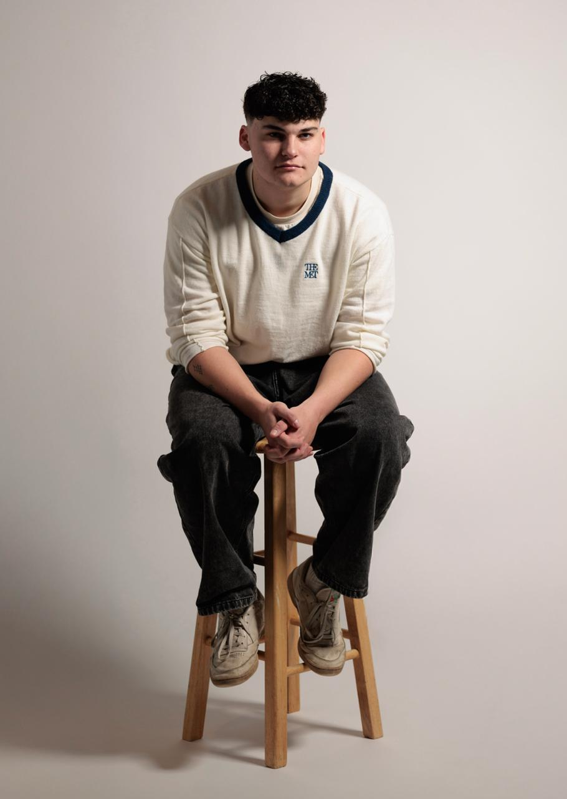
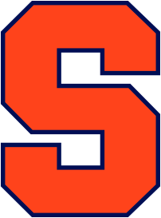
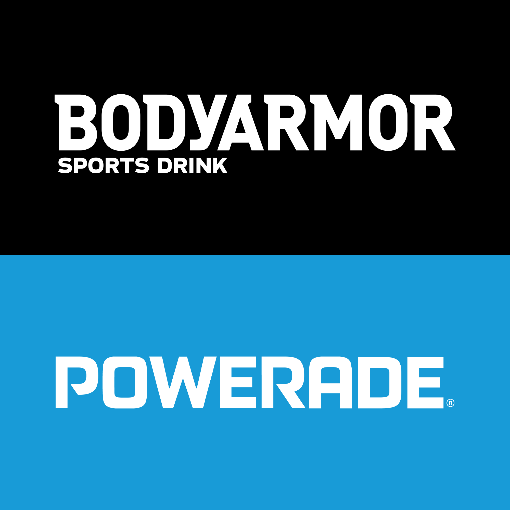

Photo by Malcolm TaylorAbout me
When I was a kid, everyone told me I'd be an engineer. I was big into DIY and tech, building cardboard phones, VR headsets, and whatever else I could imagine. That creative energy was eventually channeled into video editing, cutting YouTube videos and sports highlight reels for hours on end.
I found graphic design in the nick of time, taking my first class senior year of high school. Now, graduating from Syracuse with an award in motion design, I can say I made little Mike proud, and I'll keep doing so by staying on top of emerging tech and being the best creative I can be.
Education
Syracuse University

May 2026
S.I. Newhouse School of Public Communications
Bachelor of Science, Graphic Design
College of Visual and Performing Arts
Minor, Music Industry
Experience
Graphic Design & Video Intern

BODYARMOR SuperDrink
Jun — Aug 2025
Designed POS ads deployed across hundreds of BODYARMOR and Powerade retail locations nationwide. Produced an original video ad for Powerade's fall football campaign. Led AI capstone project generating branded content, presented to C-suite executives.
University Union
Dec 2024 — Present
Co-direct design board producing visuals for 20+ events including concerts and festivals. Create graphics for social media reaching 12,000+ Instagram followers. Design large-format signage displayed in the Schine Student Center. Oversee visual direction and brand consistency across all University Union marketing.
Head of Design
20 Watts Magazine
Sep — Dec 2024
Designed graphics for events and promotional materials. Aligned design concepts with editorial goals across team meetings. Created onboarding tutorials for new members. Mentored and guided design team through projects.
Head of Design
Mixtape Magazine
Sep 2022 — Sep 2024
Designed print magazine graphic and 10+ web article graphics. Collaborated with editorial teams on visual concepts. Managed and coordinated design projects from conception to finish.
Skills
Design , , , , ,
AI & Tech , , , , ,
Platforms , , , ,
Achievements
Visual Communications Department Prize in Motion Graphics
S.I. Newhouse School of Public Communications
2026
Top 5% of Rocket League players globally
2026
in Doubles (top 4.999%) · in Standard (top 4.112%) · in Solo (top 6.550%)
Walk-On, Syracuse Football
ACC Academic Honor Roll
2025
Interests
Games ,
Sports ,
Books
TV , , , , ,
Film , , , , , , , ,
Music Indie (, , , ), Rap (, ),
“I want to see your work”
Studio
“I want to use your work”
Playground
“I don’t give a f*** about your work”
About